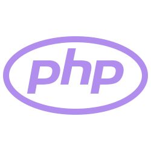
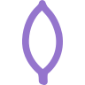
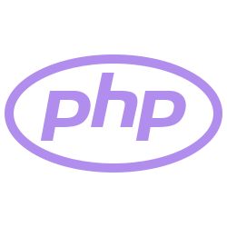
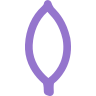

Hello World
Sobre mim
Ana Julia Marçal - 19y - Full stack Developer
Tenho 2 anos de experiência, faço análise e desenvolvimento de sistemas na Mackezine, trabalho na Wind e escrevo alguns artigos sobre tecnologia e programação.
My stack:

 

Experiência
Open Genus - Trabalho voluntário
- Escrever artigos técnicos sobre tópicos relacionados a engenharia de software
- Analisar protocolos e rede e sistemas
- Desenvolvimento backend com nodejs e express
Wind - CLT
- Desenvolvimento Fullstack com Php, Javascript, Angular, bootstrap, sql e outros...
- Desenvolvimento de módulos, abrangendo tanto a parte front-end quanto a parte back-end
- Criação e manutenção de esquemas e consultas de banco de dados.
Projetos
Go Reusable Api
Go-reusable-api é uma API sofisticada que combina alto desempenho com funcionalidades avançadas, como cache com Redis, integração com PostgreSQL, limitação de taxa, autenticação segura, conteinerização com Docker e monitoramento com Prometheus. Tudo isso mantendo facilidade de uso e segurança robusta.
Acesse o projeto
Scraping bets
Revolucione sua experiência de apostas com este projeto inovador, que integra scraping de apostas e um bot do Telegram. Usando o Puppeteer, ele coleta as melhores dicas de apostas, jogos e odds com base nas ligas registradas pelo usuário, e as entrega diretamente para você via Telegram todos os dias.
Acesse o projeto
Telegram-bet-bot
Um bot no Telegram para enviar as scraps das apostas diárias que fiz com o Puppeteer, baseadas nas ligas cadastradas pelo usuário.
Acesse o projeto